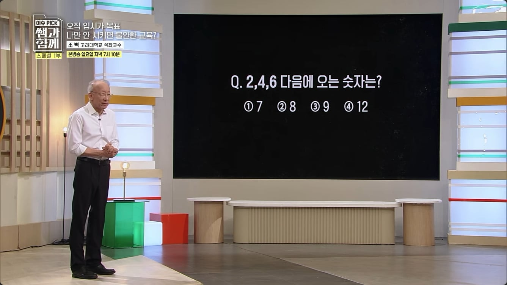
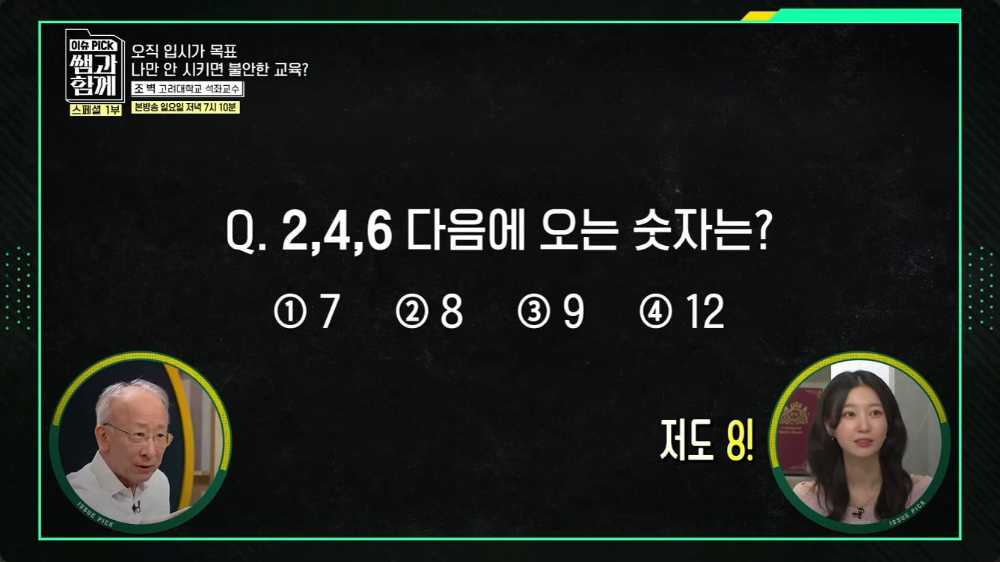
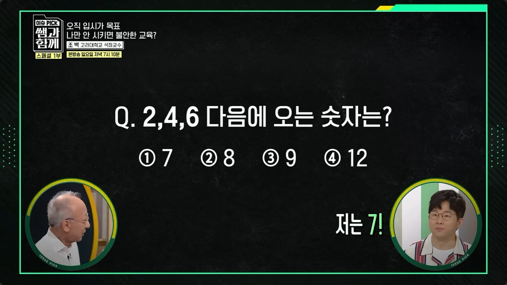
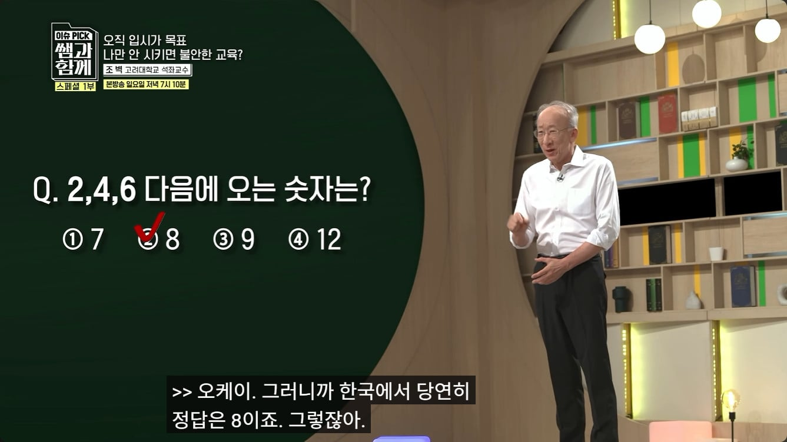
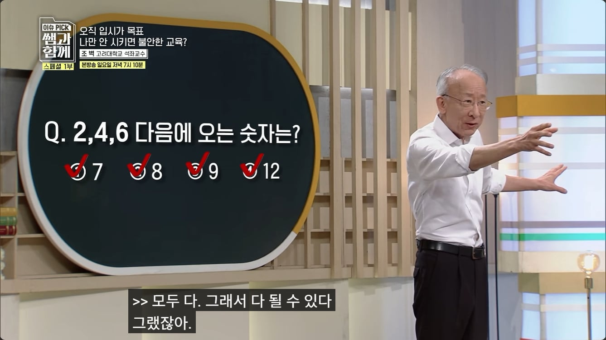
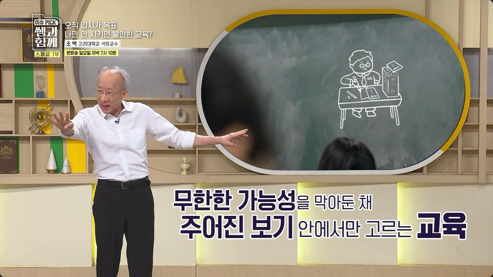

아






아
보기부터가 창의성이 없네 특수문자나 이모티콘정도 넣어줘야지
사지선다해놓고 하나만 픽하라는 소리없었음 이쥐롤 ㅅㅍ
저런게 창의성이랑 뭔상관이지
창의성? 수업시간에 딴지걸던 애들 같음
뭔 개쌉소리를 하는건지
❯ 2,4,6다음에오는숫자는? 7 8 9 12 어느것
8이에요. 2씩 늘어나는 짝수 수열(2, 4, 6, 8)로 보는 게 가장 자연스러워요.
다만 규칙을 다르게 잡으면 다른 답도 가능해요.
- 12: 2, 4, 6이 12의 약수라고 보면, 다음 약수는 12예요.
- 7, 9: "앞의 수보다 크기만 하면 된다"는 규칙이면 넷 다 정답이에요. 실제로 심리학의 유명한 2-4-6 실험에서 정답 규칙은 이거였어요. 사람들이 "2씩 증가"라고 단정하고 그걸 확인하는 예시만 시험해보다가 틀리는 걸 보여준 실험이에요.
그래서 보기 중 하나를 고르라면 8이지만, 혹시 2-4-6 실험을 염두에 두고 낸 문제라면 넷 다 맞아요.
-------------------
아니 문제만 냈는데 심리학실험이 존재하는것 까지 이미 다알고있구만 ㄷ
Ai 가 진짜.. 편리하다
이런 아가리가 어릴때 공부 안 하고 못하던 애들한테 합리화거리 되는게 문제임
당장 개드립만 봐도 우리나라 교육이 별로라고는 하는데
영재교육과 영재학교를 비롯해서 조금이라도 선별되어서 받을 수 있는 교육을 받았다면 반박가능한 개소리들을 늘어놓음
수학에서 시발 창의성얘기를 처하네 ㅋㅋㅋ
"올수 있는" 이라고 하던지 ㅋㅋㅋㅋ
앞에서 규칙성을 보여줘놓고 "오는 숫자" 면 대부분 8이지
국어부터 똑바로
ㄹㅇㅋㅋㅋ말장난